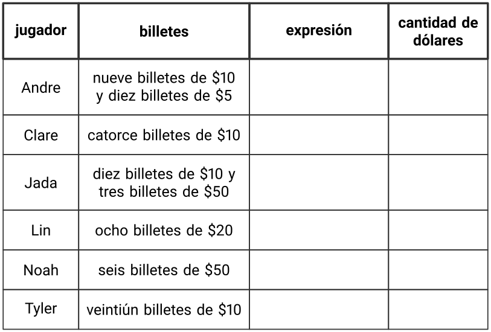
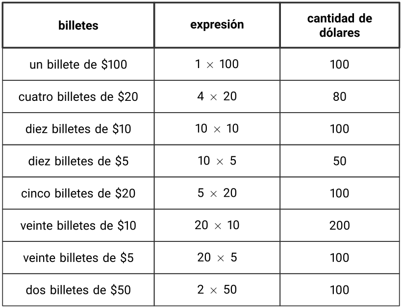
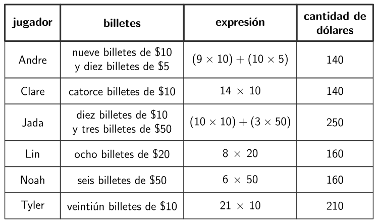
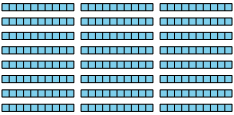

SubsecciónLección 12 - Multipliquemos múltiplos de diez
Objetivos de aprendizaje
Multiplicar números enteros de un dígito por múltiplos de 10 utilizando estrategias basadas en el valor posicional y las propiedades de las operaciones.
El trabajo de esta lección se relaciona con lecciones anteriores en las que los estudiantes han usado estrategias basadas en las propiedades de las operaciones para multiplicar hasta de 100. En esta lección, los estudiantes usan el valor posicional para multiplicar números de un solo dígito por múltiplos de 10. Los estudiantes exploran cómo agrupar 180 en múltiplos de diez de diferentes maneras y analizan dos estrategias para multiplicar un número de un solo dígito por un múltiplo de diez. Luego, solucionan problemas similares usando la estrategia de su elección. A lo largo de la lección, se utiliza la propiedad asociativa como una estrategia para pensar en problemas como \(3 \times 60\) como 18 decenas o \(18 \times 10\text{.}\)
Cuando los estudiantes descomponen múltiplos de diez de diferentes maneras como estrategia para multiplicar, están buscando y haciendo uso de la estructura [MP7].
Preguntas de reflexión.
Los estudiantes han utilizado el valor posicional en lecciones anteriores para sumar y restar. En esta lección, ¿cómo comenzaron a utilizar el valor posicional como estrategia para multiplicar múltiplos de 10?
SubsubsecciónCalentamiento (10 mins)
Tiempo recomendado.
10 minutos
Narrativa.
El propósito de esta actividad de calentamiento es generar la idea de que 3 grupos de 40 también se pueden ver como 12 grupos de 10. Esto le servirá a los estudiantes cuando multiplquen números enteros de un dígito por múltiplos de 10 en una actividad posterior. Aunque los estudiantes pueden observar y preguntarse muchas cosas, ver que el total se puede descomponer en filas de 30 y luego descomponerse aún más en unidades de 10 son los puntos de discusión importantes.
Lanzamiento.
Grupos de 2
Mostrar la imagen.
“¿Qué observan? ¿Qué se preguntan?”
1 minuto: tiempo para pensar en silencio
Desarrollo de la actividad.
“Discutan con su pareja cómo pensaron”
1 minuto: discusión en pareja
Comparta y registre las respuestas.
Calentamiento48.Observa y pregúntate: Decenas.
¿Qué observas? ¿Qué te preguntas?
Solución.
Los estudiantes pueden observar:
Estos son diagramas de bloques en base diez.
Hay 10 cuadrados (o unidades) en cada rectángulo o bloque.
Hay 4 filas y 3 columnas de decenas.
Hay 3 decenas en cada fila.
Hay 30 en cada fila.
Puedo contar de 30 en 30 para encontrar el total.
Hay 12 grupos de diez.
Los estudiantes pueden preguntarse:
¿Cuántos cuadrados (o unidades) hay en cada sección?
¿Cuántos cuadrados hay en cada fila?
¿Cuántos cuadrados hay en total?
Síntesis de la actividad.
“¿Qué valor está representado por el diagrama?” (120)
“¿Cómo nos puede ayudar ver los grupos de diez a encontrar el número total de cuadrados?” (Hay 3 grupos de 4 decenas, que son 12 decenas. Hay 4 grupos de 30, que son 12 decenas. Podríamos contar de diez en diez para encontrar el total. Sabemos que 12 decenas serían 120.)
Registre ecuaciones que reflejen formas de pensar de los estudiantes, como \(3 \times 4 \times 10 = 12 \times 10\) y \(4 \times 30 = 12 \times 10\text{.}\)
SubsubsecciónActividad 1 (15 mins)
Tiempo recomendado.
15 minutos
Narrativa.
En esta actividad, los estudiantes trabajan con billetes de dólar para representar cantidades de números enteros y múltiplos de 10 de forma concreta antes de abordar conceptos más abstractos. Por ejemplo, con cuatro billetes de $20, escriben expresiones como \(4 \times 20\) y encuentran su valor utilizando estrategias que tengan sentido para ellos, como contar de 20 en 20 o pensar en $20 como dos billetes de $10 y encontrar \(4 \times 2 \times 10\) (o \(8 \times 10\)). Se sugiere proporcionar dinero de juguete para ayudarles a visualizar las cantidades y apoyar su razonamiento.
“Vamos a resolver un problema sobre un juego en el que se usa dinero de juguete. ¿Qué saben sobre los juegos en los que se usa dinero de juguete?”
1 minuto: tiempo para pensar en silencio
Compartir respuestas.
Dar acceso a los estudiantes a bloques en base diez, papel cuadriculado y dinero de juguete, si está disponible.
Desarrollo de la actividad.
“Completen los problemas con su compañero”
7-10 minutos: tiempo de trabajo en pareja
En el último problema, identifique a los estudiantes que utilicen las siguientes estrategias para resaltar en la síntesis:
Contar de a múltiplos de 10 para encontrar un total, como 50, 100, 150, 200, 250, 300.
Usar el valor posicional para encontrar un total, como saber que 14 decenas son 10 decenas o 100, y 4 decenas más o 40, lo que hace 140.
Actividad49.Una gran cantidad de dólares.
Seis amigos juegan un juego de mesa en el que se usa dinero de juguete. Hay billetes de papel de $5, $10, $20, $50 y de $100.
Cada jugador recibió $100 para empezar. ¿Cuáles de los siguientes podrían ser los billetes que recibió cada jugador?
Escribe una expresión que represente los billetes de juguete y escribe la cantidad de dólares.
En un momento del juego, Noah tuvo que pagarle a Lin $150. Él le dio esa cantidad usando billetes del mismo tipo.
¿Cuáles y cuántos billetes podría haber usado Noah para completar $150? Nombra todas las posibilidades.
Escribe una expresión para cada forma en la que Noah podría haberle pagado a Lin.
La tabla muestra lo que tenían los jugadores al final del juego. Gana la persona que tenga la mayor cantidad de dinero. ¿Quién ganó el juego?
Escribe una expresión que represente los billetes que tiene cada persona y escribe la cantidad de dólares.

Solución.

Tres billetes de \(\$50\text{,}\) quince billetes de \(\$10\) y treinta billetes de \(\$5\text{.}\)
\(3 \times 50\text{,}\)\(15 \times 10\) y \(30 \times 5\)
Hoah ganó el juego.

Para los estudiantes con dificultades.
Si los estudiantes no encuentran el producto de números enteros de un solo dígito y múltiplos de 10 en el último problema, considere preguntar:
“¿Qué has intentado hasta ahora para encontrar el producto?”
“¿Cómo podrías representar el producto con bloques en base diez?”
Síntesis de la actividad.
Invite a los estudiantes a compartir diferentes combinaciones del mismo billete que podrían usarse para hacer \(\$150\text{.}\) Registre y muestre las expresiones para cada combinación.
Seleccione a los estudiantes previamente identificados para que compartan sus estrategias sobre cómo encontraron uno de los totales en el último problema.
Desarrollo de lenguaje matemático.
MLR8 Apoyos para la discusión. Antes de resolver los problemas, invite a los estudiantes a dar sentido a las situaciones y a compartir su comprensión con su compañero por turnos. Escuche y aclare cualquier pregunta sobre el contexto.
Acceso a estudiantes con discapacidades.
Compromiso: Desarrollar esfuerzo y persistencia. Verifique y proporcione a cada grupo retroalimentación que fomente la colaboración y la comunidad. Por ejemplo, esegurese de que cada miembro del grupo tenga la oportunidad de compartir su solución y pensamiento.
Apoya la accesibilidad para: Funcionamiento social-emocional
SubsubsecciónActividad 2 (20 mins)
Tiempo recomendado.
20 minutos
Narrativa.
En esta actividad, los estudiantes usan bloques en base diez para multiplicar un número entero por un múltiplo de 10. Analizarán dos estrategias, una basada en el valor posicional y otra que utiliza la propiedad asociativa. Por ejemplo, pensarán en \(8 \times 30\) como \(8 \times 3 \times 10\) o \(24 \times 10\text{.}\)
Ahora encuentren el valor de los demás productos con su compañero.
5-7 minutos: tiempo de trabajo en pareja
Identifique a los estudiantes que usan la propiedad asociativa como estrategia para resaltar su trabajo durante la síntesis.
Actividad50.Dos estrategias.
Dos estudiantes usaron bloques en base diez para encontrar el valor de \(8\times 30\text{.}\)

Jada contó: 30, 60, 90, 120, 150, 180, 210, 240 y dijo que la respuesta es 240.
Kiran dijo que él sabía que \(8\times 3\) es 24, luego encontró \(24\times 10\) y obtuvo 240.
¿En qué se parecen las estrategias de Jada y de Kiran? ¿En qué son diferentes?
Encuentra el valor de cada expresión. Explica o muestra tu razonamiento.
\(\displaystyle 5 \times 60\)
\(\displaystyle 8 \times 50\)
\(\displaystyle 4 \times 30\)
\(\displaystyle 7 \times 40\)
\(\displaystyle 9 \times 20\)
Solución.
Ejemplo de respuestas: Son similares porque ambos obtienen 240. La estrategia de Kiran descompone el 30 en \(3 \times 10\text{,}\) luego multiplica el \(3 \times 8\) y después \(24 \times 10\text{.}\) Jada simplemente cuenta de 30 en 30 sin descomponer nada.
180. Ejemplo de respuesta: El estudiante cuenta de 20 en 20 nueve veces, como 20, 40, 60, 80, 100, 120, 140, 160, 180.
Síntesis de la actividad.
Seleccione de 2 a 3 estudiantes que hayan utilizado una estrategia basada en la propiedad asociativa (por ejemplo, pensando en \(7 \times 40\) como 28 decenas) para compartir sus respuestas.
Considere preguntar:
“¿En qué parte del trabajo de vemos la expresión original?”
“¿Cómo cambió la expresión original para que fuera más fácil encontrar el total?”
“¿Cómo funciona la estrategia para multiplicar que usó ?”
SubsubsecciónSíntesis de la lección (10 mins)
“Hoy multiplicamos números enteros de un dígito por múltiplos de 10”
“¿Cómo nos ayudó pensar en decenas a encontrar el valor de los productos que eran mayores que los que habíamos encontrado antes?” (Usar decenas nos ayudó a contar o multiplicar mucho más rápido. Si sabemos \(5 \times 6\text{,}\) podemos pensar en esa cantidad de decenas para encontrar \(5 \times 60\text{.}\) Podemos usar lo que ya sabemos para encontrar otros productos.)
“¿Qué estrategias fueron útiles cuando multiplicaron números enteros de un dígito por múltiplos de 10?” (Decomponiendo uno de los factores y encontrando productos más pequeños. Usando el valor posicional para multiplicar por 10 ya que sabemos que 10 decenas son 100.)